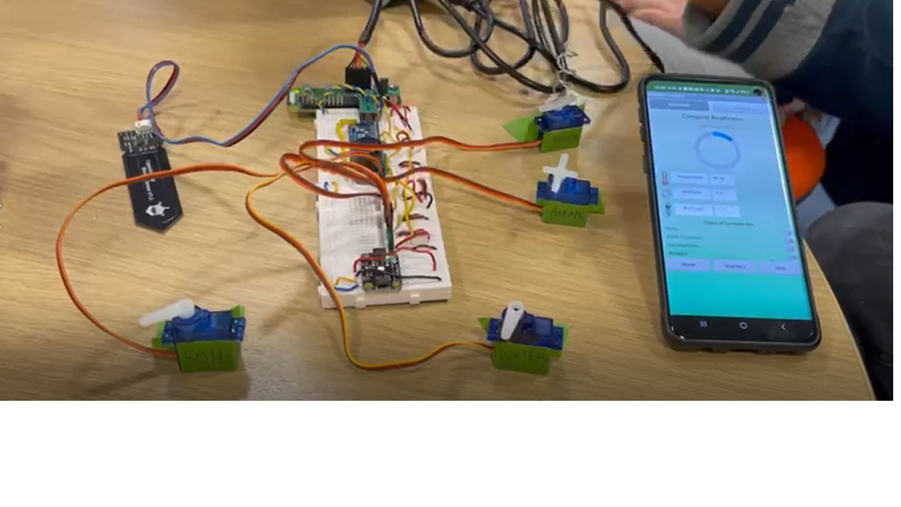

Projects
Smart Compost Bin - February 2022
Github Link

The smart compost bin is developed as part of the Year 3 Embedded Systems module at Imperial College London.
The system utilises temperature sensor to detect the temperature inside the bin, moisture sensor to detect the moisture level inside the bin and ultrasound level sensor to detect the level of the bin. Motors are also built inside the compost bin to stir the compost with just one click inside our Android app or automatically. The bin also comes with a water dispenser and a dry materials dispenser that automatically adds water or dry materials depending if it is too wet or too dry.
An Android app is also built to display the latest sensor values which is received using MQTT communication protocol. The historical sensor values are also displayed on a line chart. Users can also activate the in-built motor by clicking a button inside the app through the 'manual' mode. If desired, users can sit back and relax by letting the 'automatic' mode does its job.
For more information, the website of the smart compost bin can also be accessed here.